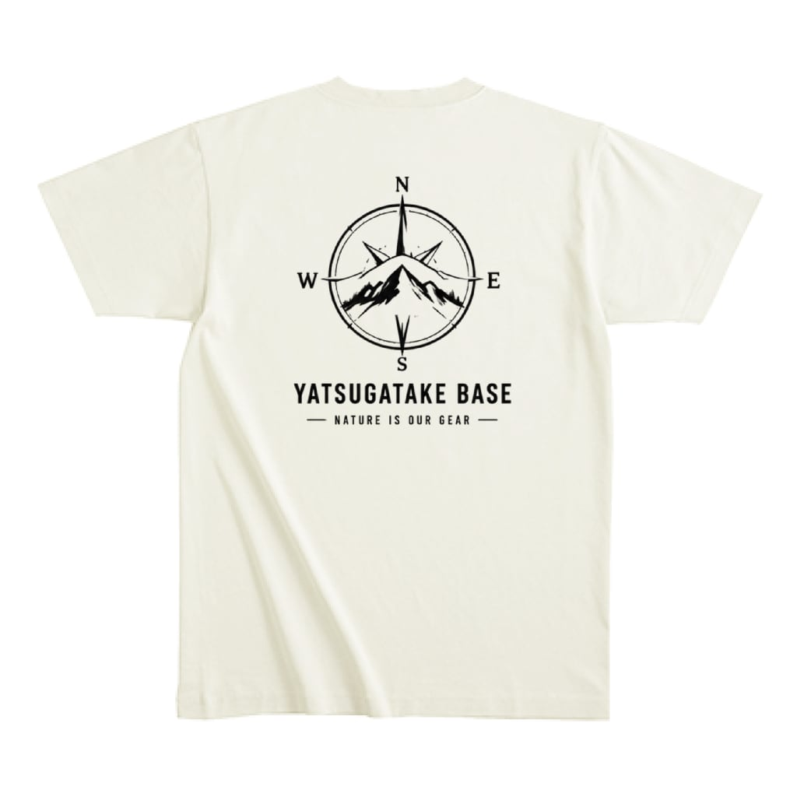
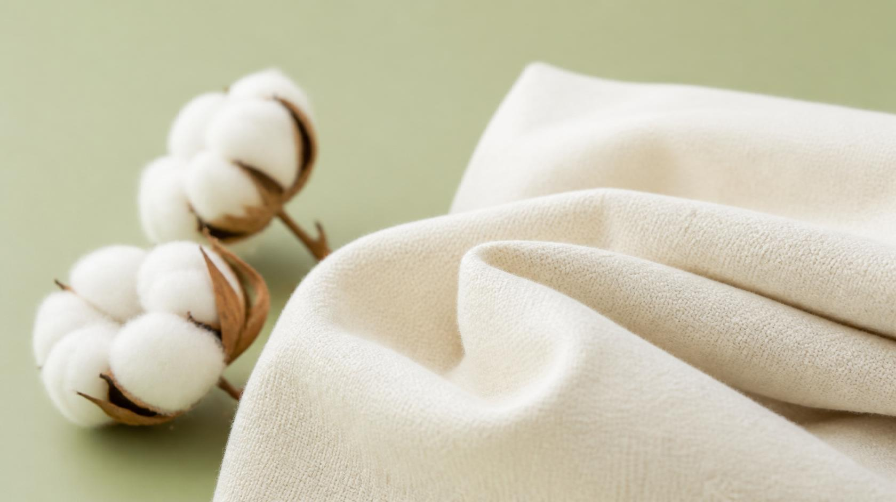
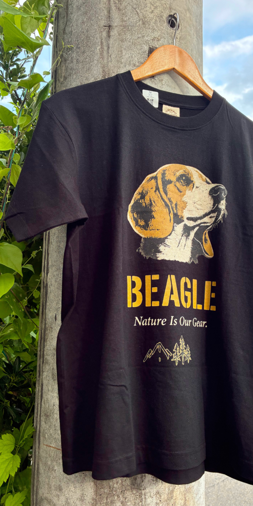
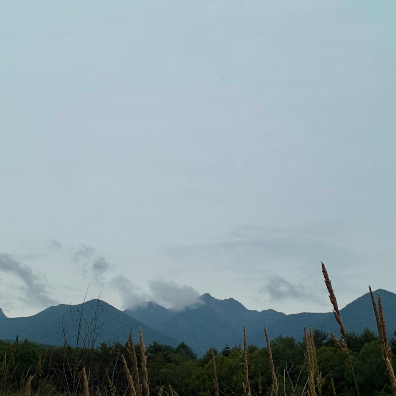
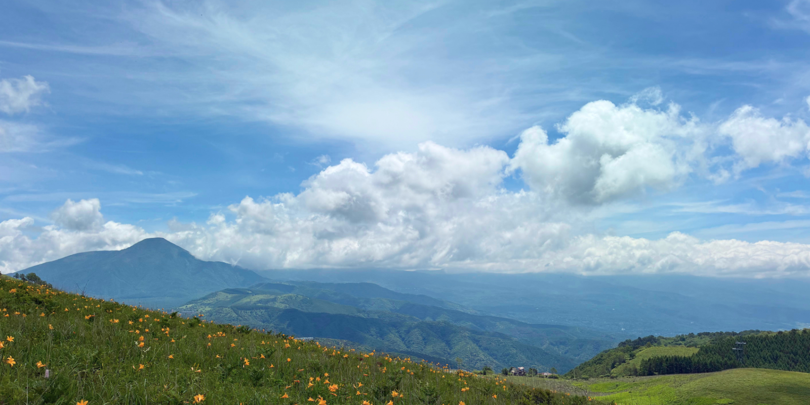
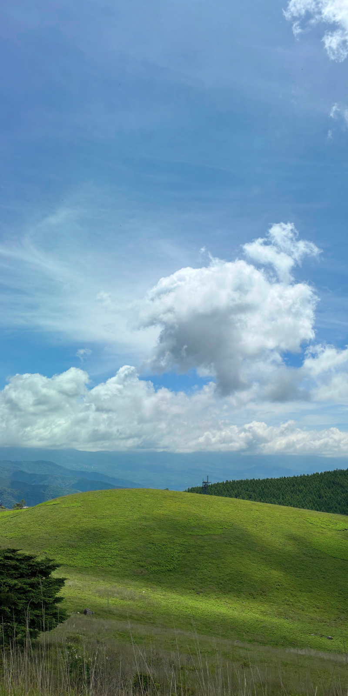
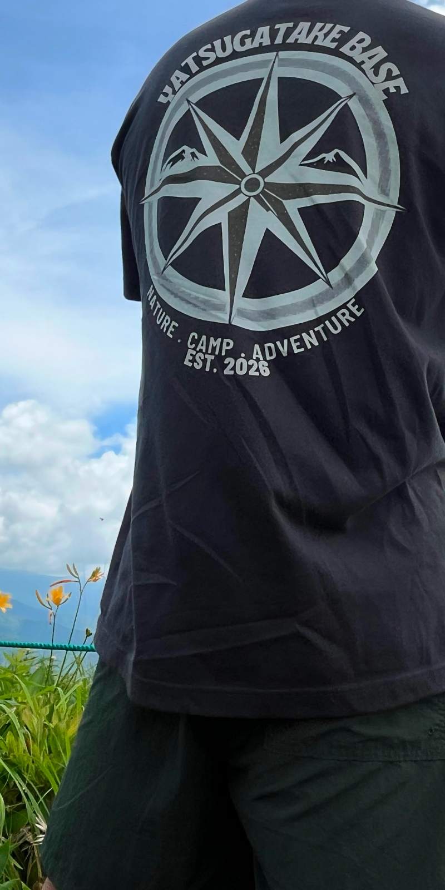

About
自然を愛するすべての人へ。
YATSUGATAKE BASEは、長野県・八ヶ岳を拠点とするアウトドアライフスタイルブランドです。山を歩き、犬と遊び、バイクで風を切る——そんな自然の中での時間を大切にする人たちのために、私たちは服をつくっています。
私たちが選んだのは、オーガニックコットン100%という素材です。肌に触れるものだからこそ、安心できるものを。地球に負荷をかけないものを。そしてなにより、長く愛用できるものを。シンプルで飽きのこないデザインは、流行に左右されず、自然の中でも街の中でも、静かに馴染みます。
八ヶ岳の空気と光の中で生まれたプロダクトが、あなたの日常に自然の豊かさを届けられることを願っています。

なぜ、オーガニックコットンなのか。
通常の綿花栽培では大量の農薬が使われます。オーガニックコットンは農薬や化学肥料を使わず育てられた綿花のこと。土壌と水を守り、農家の健康を守り、そして着る人の肌を守ります。YATSUGATAKE BASEがオーガニックコットンにこだわるのは、自然を愛するブランドとして当然の選択だと考えているからです。
Quality
妥協しない、4つの理由。
-
Organic Cotton 100%
農薬・化学肥料不使用のオーガニックコットンのみを使用。肌と地球にやさしい選択を。
-
Comfort
トレイルでも、タウンでも。動きやすさと着心地を両立した、毎日着たくなる一枚。
-
Designed in Nagano
八ヶ岳の自然からインスピレーションを得てデザイン。土地への敬意をかたちに。
-
Made to Last
流行に左右されないシンプルなデザイン。10年後も着られる一枚を目指して、丁寧につくっています。
Gallery
八ヶ岳の日々。





FAQ
よくある質問
-
商品ページに各アイテムのサイズ表（着丈・身幅・肩幅・袖丈）を記載しています。YATSUGATAKE BASEのTシャツは若干小さめです。普段のサイズより1サイズ大きめをお選びいただくか、実寸をご確認の上ご注文ください。迷われた場合はお気軽にInstagramのDMまたはBASEのメッセージ機能でご相談ください。
-
通常ご注文から１週間ほどで発送いたします。オンラインショップの商品はすべて受注生産のためご注文から発送までお時間をいただいております。
-
洗濯機使用可能です（ネットに入れて洗濯機の弱水流またはデリケートコースを推奨）。30℃以下の水温で洗ってください。乾燥機のご使用は縮みの原因となるためお避けください。直射日光を避け、陰干しをお勧めします。プリント部分を裏返して洗うとより長持ちします。
-
基本的にお客様ご理由でのキャンセル、返品交換は承っておりません。お届け商品に不備があった際は商品到着後7日間まで返品交換の対応を承ります。